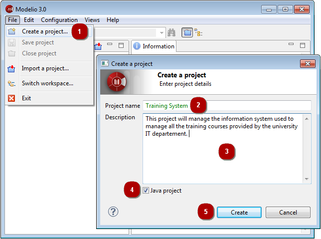

Creating a project¶

Creating a new project¶
- Click on “File\Create a project…”.
- Enter the name of the project.
- Enter the description of the project.
- You can choose to deploy the Java Designer module in your project by checking or not checking the “Java project” tickbox.
- Click on “Create” to create and open the project.
Note: Each project name is unique, and it is not possible to create two projects with the same name.